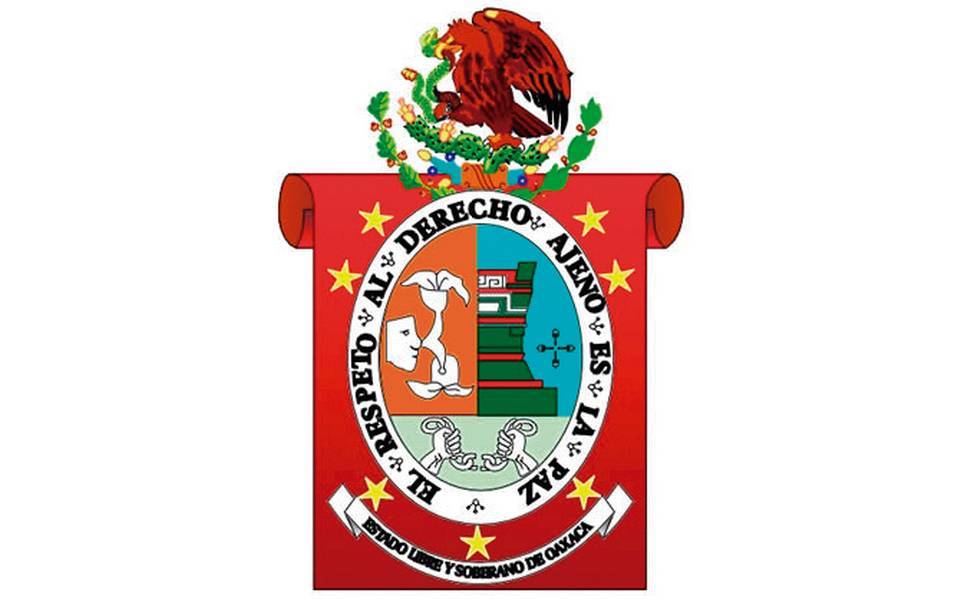

Escudos
Sobre un lienzo color rojo saturno que simboliza las luchas libertarias del pueblo oaxaqueño y arrollado por el tiempo a manera de un pergamino, se destacan siete estrellas(1), que representan las regiones del Estado; abajo la inscripción “Estado libre y soberano de Oaxaca” En la parte superior central, emerge el águila nacional.
En el centro, dentro de una corona ovoidal parabólica, se destaca el apotegma de Juárez: “El Respeto al Derecho Ajeno es la Paz” estando separadas las palabras por representaciones figurativas del nopal de la grana, como símbolo de la riqueza Oaxaqueña antigua.
En el interior aparecen tres campos delimitados en la siguiente forma: en el superior de la izquierda, el topónimo de Huaxyacac; en el superior derecho, un perfil de los palacios de Mitla, en juego de sepias, flaqueando esta figura a su derecha, la Cruz Dominicana; en la parte inferior, dos fuertes brazos rompiendo las cadenas de la opresión, que simbolizan los anhelos del pueblo Oaxaqueño en la conquista de su libertad.
Significado del escudo

El lienzo enrollado
Las luchas por la libertad de los Oaxaqueños.
Las representaciones del nopal
La antigua riqueza Oaxaqueña.
La cruz dominicana
En reconocimiento a la labor de esta orden en la zona.
Las siete estrellas
Cada uno de las siete regiones del Estado, (la Cañada, los Valles Centrales, la Mixteca, la Sierra, la Costa, el Istmo y Tuxtepec).
El topónimo de huaxyacac
En el siglo XV los mexicas establecieron un campamento en este valle al que llamaron Huaxyacac, que en Náhuatl significa “En la punta o en la nariz del huaje”, origen del vocablo Oaxaca.
Las manos rompiendo las cadenas
El fin de la opresión.
La leyenda del ovalo
El lema de Benito Juárez.
El perfil del palacio de Mitla
Hace alusión al pasado remoto de la región.